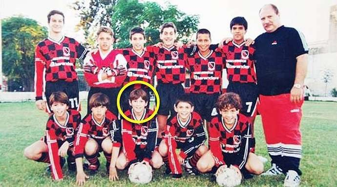
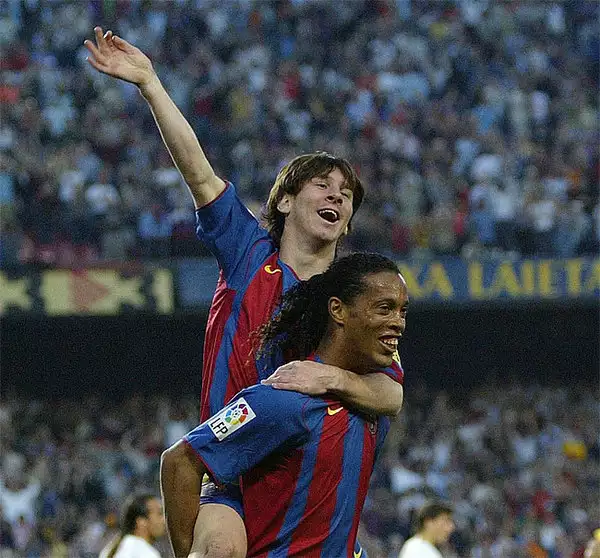
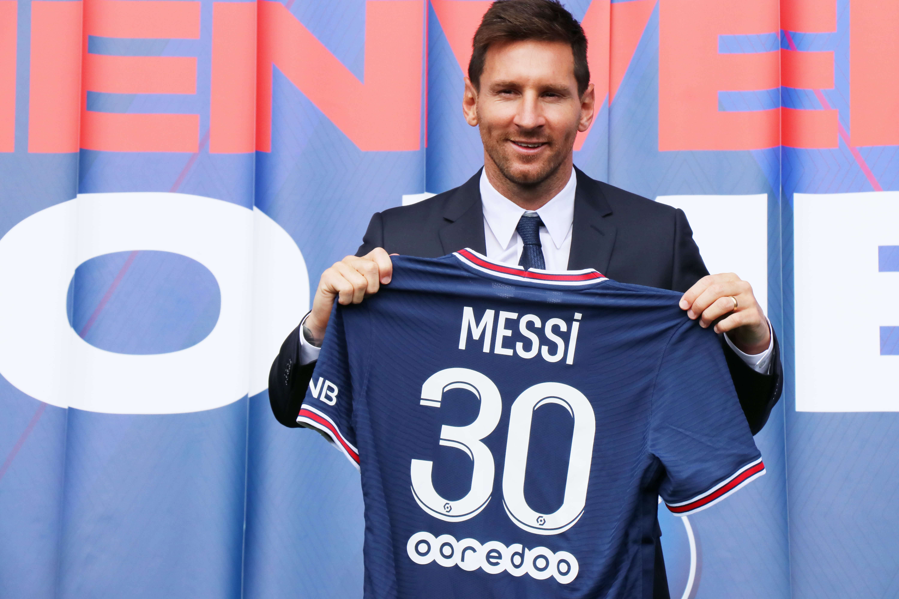
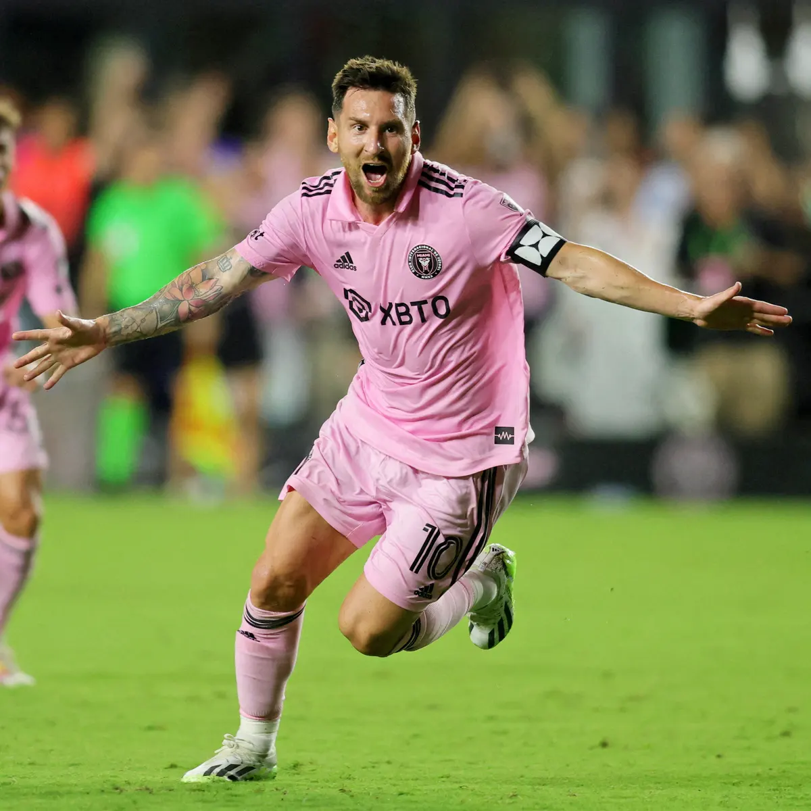

Messi's club career started in 1992 when he played for 3 years for Argentinian side Grandoli FC, a club coached by his father. In 1995, Messi signed for Newell's Old Boys, a popular club in Argentina. Unfortunately at the age of 11 Messi was diagnosed with a growth hormone deficiency, and the treatment for his condition cost a lot of money which his family could not afford. However, Messi’s playing and skills still brought in a lot of attention from various clubs. A soccer club called River Plate showed interest, but they weren’t financially stable enough to pay up to 500 euros a month to treat Messi’s condition, like he needed in order to play. At the time, FC Barcelona were also extremely interested in signing Messi for their youth academy. The technical director Carles Rexach was aware of Messi’s talents and offered him a contract, offering to pay for his medical bills as long as he was willing to make the move to Spain. As this was an opportunity of a lifetime, the family decided to move to Europe.
Messi’s European career then began at FC Barcelona. At the Spanish club, he slowly worked his way through the ranks, playing for the youth teams as well as FC Barcelona B. He eventually made his first team debut in October 2004 against RCD Espanyol, becoming the third-youngest player to ever debut for the club. It didn’t take him long to find his name on the scoresheet as on May 1st, 2005 he managed to score his first-ever goal for the club against Albacete Balompié. Messi was only 17 years old, making him the youngest ever to score in a La Liga game for FC Barcelona. The rest was history. Messi won a total of 35 team trophies, the biggest being 4 UEFA Champions League as well as 52 individual trophies with his most famous being 7 Ballon d’Or. He spent a total of 21 years at FC Barcelona playing 778 matches, scoring 672 goals, and providing 308 assists. Unfortunately, he was forced to transfer to a different club as FC Barcelona found themselves struggling financially and needed money to pay wages. Messi’s career for FC Barcelona will certainly never be forgotten as he was always loyal to the club who helped him when he needed it the most.
In the summer of 2021, Messi shocked the world by making a transfer to Paris Saint-Germain for free due to his contract with FC Barcelona ending. Although many were disappointed with the fact he was leaving his childhood club, the front trio at PSG was certainly a combination many were looking forward to. Kylian Mbappé from France, Neymar from Brazil, and finally, Messi. This trio had the potential to be the best front three in the world, but unfortunately they weren’t able to achieve much. During Messi’s time at the French club, he managed to win 3 team trophies, two league cups as well as one French super cub. He played a total of 75 games, finding the back of the net 32 times and providing 35 assists.
Messi recently made headlines with his transfer to Inter Miami. As many players are heading toward Saudi Arabia, Messi decided to take a different path and head towards the MLS. MLS side Inter Miami, owned by English legend David Beckham, managed to sign Leo for free as Paris Saint Germain failed to renew his contract. Although he has only played 2 games he has managed to provide 3 goals and one assist. Messi is currently 36 and nearing the end of his career however he is proving that he is still a threat to be reckoned with, showing glimpses of magic within each and every game.
